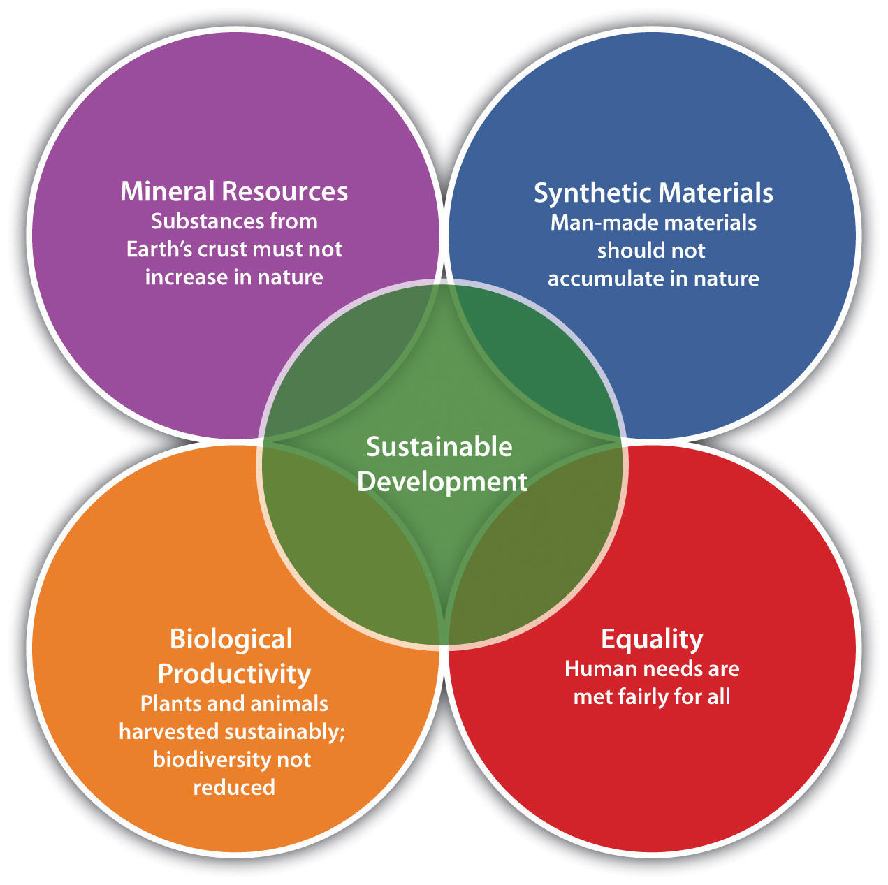
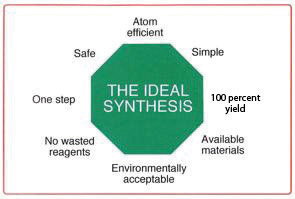

During the 1990s and the first decade of the twenty-first century, start-up ventures and large corporations adopted a variety of approaches to shape what we now call sustainability-based product and strategy designs. A sustainability approach acknowledges the interdependencies among healthy economic growth and healthy social and ecological systems. Sustainability innovation and entrepreneurshipThe cutting edge of business redesign that assesses business systems as a whole and attempts to eliminate pollution, waste streams, and inefficiency by refashioning products, processes, and supply chains. seeks to optimize performance across economic, social, and ecological business dimensions. Applied broadly across countries, this effort will evolve a design of commerce aligned and compatible with human and ecosystem health. A growing number of firms are applying creative practices demonstrating the compatibility of profit, community health, and viable natural systems. This discussion provides an introduction to some of the most important approaches used by firms to guide firms.Some topics discussed here have well-developed research literature and are taught as courses in engineering, chemistry, and executive business programs. A word of caution: terms do not have precise or universal meanings. Different academics and practitioners offer alternative views, and thus definitions may vary; this overview employs a consensus definition of a tool or concept as it is expressed by the author or authors primarily responsible for creating that tool or concept.
The spectrum of approaches can be viewed along a continuum toward the ideal of sustainability. Imagine a timeline. The Industrial Revolution has unfolded on the left side with time moving toward the right on a continuum. We are quickly learning how and why our industrial system, as currently designed, can undermine biosphere systems such as the atmosphere, water tables, fisheries, or soil fertility. With entrepreneurial actors leading the way, our response is to adapt our institutions and our mind-sets. Ultimately the evolution of new knowledge will create new rules for commerce, driving a redesign of our commercial systems to coevolve more compatibly with the natural world and human health requirements. Currently we are in a transition from the left side of the continuum to the right. On the far right of the continuum is the ideal state in which we achieve a design of commerce compatible with human prosperity and ecosystem health. This ideal state includes provision of goods and services to support a peaceful global community, one that is not undermined by violence and civil unrest due to income and resource disparities. Is this ideal state unrealistic? Having a human being walk on the moon was once thought impossible. Electricity was once unknown. Global treaties were considered impossible before they were achieved. Humans shape their future every day, and they can shape this future. In fact, the author’s decades of research show people are already shaping it. It’s a question of whether the reader wants to join in.
Looking at the timeline—or continuum—as a whole, the transition from the Industrial Revolution toward the ideal state can be characterized by imagining a “filter” of environmental and health protection imposed on manufacturing processes. This process is well under way around the world. The filter first appeared at the “end of the pipe” where waste pollution moved from a facility to the surrounding water, air, and soil. With the first round of US regulations in the 1970s (mirrored by public policies in many other countries in the intervening years), typical end-of-the-pipe solutions included scrubbers, filters, or on-site waste treatment and incineration. These are called pollution controlA method to prevent the release of emissions and other by-products into the environment after those wastes have been generated. Typical techniques include scrubbers and filters to trap pollutants. techniques, and regulations often specified the solution through fiat or “command and control” legislation.
Over time, as laws became more stringent, the conceptual filter for pollution control moved from filters on smokestacks outside a firm to operating and production processes inside. These in-the-pipe techniques constitute pollution preventionA method to reduce the generation of waste and other by-products in the first place so that they cannot accumulate in the environment. Typical techniques include dramatic improvements in the efficiency of production. measures in manufacturing and processing that minimize waste and tweak the production system to operate as efficiently as possible. Pollution prevention measures repeatedly have been shown in practice to reduce costs and risks, offering improvements in financial performance and even the quality and desirability of the final products.
In the third and final stage of social and ecological protection, the stage in which sustainability innovation thrives, the conceptual filter is incorporated into the minds of product designers, senior management, and employees. Thus the possibilities for ecological disruption and human health degradation can be removed at the early design stages by the application of human ingenuity. Fostered by a systems mind-set and informed by current science, this ingenuity enables an evolutionary adaptation of firms toward the ideal sustainability state. Seeing this design creativity at work—for example, producing clean renewable energy for electricity and benign, recyclable materials—provides a window to a future landscape in which the original Industrial Revolution is rapidly evolving to its next chapter.
Eco-efficiencyA conceptual framework that seeks to reduce the amount of material and energy needed to manufacture and use products over the product life cycle, thus minimizing waste and costs while boosting profits. describes many companies’ first efforts to reduce waste and use fewer energy and material inputs. Eco-efficiency can reduce materials and energy consumed over the product life cycle, thus minimizing waste and costs while boosting profits. Considering eco-efficiency beyond the level of the individual company leads to rethinking the industrial sector. Instead of individual firms maximizing profits, we see a web of interconnected corporations—an industrial ecosystem—through which a metabolism of materials and energy unfolds, analogous to the material and energy flows of the natural world. The tools for design for environment (DfE) and life-cycle analysis (LCA)The approach taken by firms to understand the full impact of their product throughout the production, sale, use, and disposal stages of a product’s life. from the field of industrial ecology provide information on the complete environmental impact of a product or process from material extraction to disposal. Other approaches to product design, such as concurrent engineeringA design process that involves manufacturing, operations, marketing, research, development, and other participants in collaborative conversations from the beginning of the design phase to optimize the product for sustainability., aid in placing the filter of environmental protection in a design process that invites full design participation from manufacturing, operations, and marketing representatives as well as research and development designers.
When powerful new business perspectives emerge, they often appear to be fads. Concentrating on quality, for example, seemed faddish as the movement emerged in the 1980s. Over time, however, total quality as a concept and total quality management (TQM) programs became standard practice. Now, over two decades after the quality “fad” was introduced to managers around the world, product quality assurance methods are part of the business fundamentals that good managers understand and pursue. Similarly, sustainability has been viewed as a fad. In fact, as its parameters are more carefully defined, it is increasingly understood as an emerging tenet of excellence.For a comprehensive discussion of sustainability as an emerging tenet of excellence, see Andrea Larson and Elizabeth Teisberg, eds., “Sustainable Business,” special issue, Interfaces: International Journal of the Institute for Operations Research and the Management Sciences 30, no. 3 (May/June 2000).
When we look at the emerging wave of sustainability innovation, we can view it as an adaptive process indicating that businesses are moving toward more intelligent interdependencies with natural systems. It is clear that companies are under growing pressure to offer cleaner and safer alternatives to existing products and services. This is in large part because the footprint, or cumulative impact, of business activity is becoming clearer. Pressures on companies to be transparent and factor in full costs, driven by a wide range of converging and increasingly urgent challenges from climate change and environmental health problems to regulation and resource competition, now accelerate change and drive innovation. Furthermore, growing demand for fresh water, food, and energy puts the need for innovative solutions front and center in business. In this chapter, we will look at the major shifts occurring and consider the role of paradigms and mind-sets. A presentation of core concepts, practical frameworks, and tools follows.
Table 3.1 Approximate Timing of Major Approaches/Frameworks
| Framework | Approximate Date of Emergence | Perspective |
|---|---|---|
| Pollution control (reactive) | 1970s | Comply with regulations (clean up the pollution) using technologies specified by government. |
| Pollution prevention (proactive) | 1980s | Manage resources to minimize waste based on better operating practices (prevent pollution); consistent with existing total quality management efforts. |
| Eco-efficiency | 1990s | Maximize the efficiency of inputs, processing steps, waste disposal, and so forth, because it reduces costs and boosts profits. |
| Industrial ecology, green chemistry and engineering, design for environment, life-cycle analysis, concurrent engineering | 1990s | Incorporate ecological/health impact considerations into product design stage; extend this analysis to the full product life cycle. |
| Sustainability innovation | 2000s | Combine all the above in a systems thinking approach that drives entrepreneurial innovation. |
The early decades of the twenty-first century will mark a transition period in which conventional economic models that assume infinite capacities of natural systems to provide resources and absorb waste no longer adequately reflect the reality of growth and its related environmental and health challenges. Providing material goods and creating prosperous communities for expanding populations in ways that are compatible with healthy communities and ecosystems are the core challenges of this century.
Not surprisingly, entrepreneurial innovators are stepping up to provide alternatives better aligned with the constraints of population growth, material demand, and limited resources. This activity is consistent with the role of society’s entrepreneurs. They are the societal subgroup that recognizes new needs and offers creative solutions in the marketplace. However, innovators and their new ways are often misunderstood and rejected, at least initially. Understanding the challenges facing the sustainability entrepreneurs who produce new products and technologies is enhanced by understanding how a paradigmA well-accepted thought pattern or theoretical framework that becomes integrated into our worldview such that it guides and can constrain the legitimacy of questions asked. is created and replaced.
Education, cultural messages (conveyed through family, media, and politics), and social context provide us with ideas about how the world works and shape our mind-sets. Formalized and sanctioned by academic fields and canonical textbooks, assumptions become set paradigms through which we understand the world, including our role in it and the possibilities for change. Despite new knowledge, the reality of daily living, and the results of scientific research generating empirical evidence that can challenge core assumptions, it is well known that individuals and societies resist change and hold fast to their known paradigms. Why? Because the unquestioned assumptions have functioned well for many in the population, inertia is powerful, and often we lack alternatives that will explain and bring order to what appears to be contradictory information about how new or unprecedented events are unfolding.
The fact that reality does not correspond to our assumptions can be ignored or denied for a long time if no alternative path is perceived. For years, pollution was acknowledged and accepted as the price of progress, the cost that must be paid to keep people employed and maintain economic growth. “Clean commerce” was an oxymoron. Furthermore, specialized disciplines in academia create narrow intellectual silos that become impediments to broader systems views. In business, functional silos emerge as companies grow. Communication between research and development and manufacturing breaks down, manufacturing experts and marketing staff are removed from each other’s work and even geographically separate, and sales departments rarely have the opportunity to provide feedback to designers. These realities present barriers to understanding the complex nature–human relationship shift in which we are now engaged.
It is only when the incongruity between reality and our perceived understanding of that same world presents a preponderance of data and experience to challenge accepted thought patterns that new explanations are permitted to surface, seriously discussed, and legitimized by the mainstream institutions (universities, corporations, and governments). Recently, climate change, toxin-containing household products, the collapse of ocean fisheries, the global asthma epidemic, and other challenges for which no simple answers seem possible have provided incentives for people to imagine and begin to build a different business model.
In fact, business consultants, architects, engineers, chemists, economists, and nonprofit activists have been grappling for many decades with limits to economic growth. Interdisciplinary science has become increasingly popular, and higher funding levels signal recognition that research and solutions need to bridge conventionally segregated and bound areas of thought (e.g., economics, biology, psychology, engineering, chemistry, and ecology). The new approaches to resource use, pollution, and environmental and equity concerns have opened new avenues for thought and action.
A body of ideas and approaches reflects movement toward inter- and even metadisciplinary understanding. Similarities across these approaches will be readily apparent. In fact, in combination, each of these seemingly disparate efforts to close the gap between what we have been taught about economic growth and what we have observed in the last few decades reveals common themes to guide entrepreneurial innovation and business strategy. In Chapter 3 "Framing Sustainability Innovation and Entrepreneurship", Section 3.3 "Core Ideas and Metaconcepts", we will explore some metaconcepts.
An educated entrepreneur or business leader interested in sustainability innovation should understand two core ideas. The first is that sustainability innovation ultimately contributes to preservation and restoration of nature’s carrying capacity. Carrying capacityThe ability of the natural system to sustain demands placed upon it while still retaining the self-regenerative and self-renewing processes that preserve those systems indefinitely. refers to the ability of the natural system to sustain demands placed upon it while still retaining the self-regenerative processes that preserve the system’s viability indefinitely. Note that human bodies have carrying capacities, and thus we are included in this notion of natural carrying capacities. For example, similarly to groundwater supplies or coastal estuaries, children’s bodies can be burdened with pollutants only up to a point, beyond which the system collapses into dysfunction and disease.
The second core idea is equityA fair distribution of risks and resources among classes, ethnicities, current and future generations, and so forth along with an appreciation of personal and cultural distinctions., leading to our discussion of environmental justice as the second metaconcept category. Prosperity achieved by preserving and restoring natural system carrying capacities that structurally exclude many people from realizing the benefits of that prosperity is not sustainable, practically or morally. Sustainability scholars have suggested that a “fortress” future lies ahead if equity issues are not considered core to sustainability goals. The wealthy will need to defend their wealth from gated communities, while the poor live with illness, pollution, and resource scarcity.
Sustainability innovations guided by the following approaches aim to sustain biological carrying capacities and healthy human communities that strive toward equity. The ideal is that we tap into every person’s creativity and bring it to bear on how we learn to live on what scientists now call our “full Earth.”
Each of our four key metaconcepts—sustainable development, environmental justice, earth systems engineering and management, and sustainability science—addresses ideas of equity and carrying capacity in a slightly different way. Earth Systems Engineering and management and sustainability science focus on technology and carrying capacity, while sustainable development and environmental justice emphasize social structures and equity. Yet each metaconcept realizes equity and carrying capacity are linked; humans have both social and material aspirations that must be met within the finite resources of the environment.
Sustainable developmentA socioeconomic development paradigm that achieves more widespread human prosperity while sustaining nature’s life-support systems. refers to a socioeconomic development paradigm that achieves more widespread human prosperity while sustaining nature’s life-support systems. Under sustainable development, the next generation’s choices are extended rather than attenuated; therefore, sustainable development addresses equity issues across generations to not impoverish those generations that follow. Introduced in the Brundtland Commission’s 1983 report, which focused attention on the interrelated and deteriorating environmental and social conditions worldwide, sustainable development would balance the carrying capacities of natural systems (environmental sustainability) with sociopolitical well-being. While debate continues on the challenges’ details and possible solutions, there is widespread scientific consensus that continued escalation in scale and scope of resource and energy consumption cannot be maintained without significant risk of ecological degradation accompanied by potentially severe economic and sociopolitical disruption. In 1992, the Economic Commission for Europe described societal transformation toward sustainable development moving through stages, from ignorance (problems are not widely known or understood) and lack of concern, to hope in technology-based fixes (“technology will solve our problems”), to eventual conversion of economic activities from their current separation from ecological and human health goals of society to new forms appropriately adapted to ecological laws and the promotion of community well-being. The goal of sustainable development, though perhaps impossible to reach, would be a smooth transition to a stable carrying capacity and leveling of population growth. Societies would evolve toward more compatible integration and coevolution of natural systems with industrial activity. Because corporations are among the most powerful institutions in the world today, they are viewed as instrumental in creating the transition from the current unsustainable growth trajectory to sustainable development.
Environmental justice emerged as a mainstream concept in the 1980s. Broad population segments in the United States and elsewhere increasingly acknowledged that racial and ethnic minorities and the poor (groups that often overlap) suffered greater exposure to environmental hazards and environmental degradation than the general population. Following pressure from the Congressional Black Caucus and other groups, the US Environmental Protection Agency (EPA) incorporated environmental justice into its program goals in the early 1990s. The EPA defined environmental justice as “the fair treatment and meaningful involvement of all people regardless of race, color, national origin, or income with respect to the development, implementation, and enforcement of environmental laws, regulations, and policies.” The EPA also stated that environmental justice “will be achieved when everyone enjoys the same degree of protection from environmental and health hazards and equal access to the decision-making process to have a healthy environment in which to live, learn, and work.”US Environmental Protection Agency, “Compliance and Enforcement: Environmental Justice,” last updated November 24, 2010, accessed December 3, 2010, http://www.epa.gov/oecaerth/environmentaljustice. Other definitions of environmental justice similarly include an emphasis on stakeholder participation in decisions and an equitable distribution of environmental risks and benefits.
Environmental justice in the United States grew out of a civil rights framework that guarantees equal protection under the law, which globally translated into the framework of universal human rights. It crystallized as a movement in the years 1982–83, when hundreds of people were jailed for protesting the location of a hazardous waste dump in a predominantly black community in North Carolina.April Mosley, “Why Blacks Should Be Concerned about the Environment: An Interview with Dr. Robert Bullard,” November 1999, Environmental Justice Resource Center at Clark Atlanta University, accessed July 2, 2009, http://www.ejrc.cau.edu/nov99interv.htm. In 1991, the National People of Color Environmental Leadership Summit first convened and drafted the “Principles of Environmental Justice,” which were later circulated at the 1992 Rio Earth Summit.United Church of Christ, Toxic Wastes and Race at Twenty: 1987–2007 (Cleveland, OH: United Church of Christ, 2007), 2. The 2002 UN World Conference against Racism, Racial Discrimination, Xenophobia, and Related Intolerance also embraced environmental justice in its final report.United Nations, United Nations Report of the World Conference against Racism, Racial Discrimination, Xenophobia and Related Intolerance (Durban, South Africa: United Nations, 2001), accessed December 3, 2010, http://www.un.org/WCAR/aconf189_12.pdf.
Although the placement of hazardous waste dumps and heavily polluting industries in areas predominantly inhabited by minorities, such as incinerators in the Bronx in New York City and petrochemical plants along Louisiana’s Cancer Alley, remains the most glaring example of environmental injustice, the concept encompasses myriad problems. For instance, housing in which minorities and the poor are concentrated may have lead paint (now a known neurotoxin) and proximity to the diesel exhaust of freeways and shipping terminals.David Pace, “More Blacks Live with Pollution,” Associated Press, December 13, 2005, accessed December 1, 2010, http://www.precaution.org/lib/05/more_blacks_live_with_pollution.051213.htm; American Lung Association, “Comments to the Environmental Protection Agency re: Ocean Going Vessels,” September 28, 2009, accessed April 19, 2011, http://www.lungusa.org/get-involved/advocate/advocacy-documents/Comments-to-the-Environmental-Protection-Agency -re-Ocean-Going-Vessels.pdf. Migrant agricultural laborers are regularly exposed to higher concentrations of pesticides. As heavy industries relocate to areas where labor is cheaper, those regions and countries must shoulder more of the environmental and health burdens, even though most of their products are exported. For instance, demand for bananas and biodiesel in the Northern Hemisphere may accelerate deforestation in the tropics.
Climate change has also broadened the scope of environmental justice. Poor and indigenous people will suffer more from global warming: rising waters in the Pacific Ocean could eliminate island societies and inundate countries such as Bangladesh, cause warming in the Arctic, or cause droughts in Africa. Hurricane Katrina, which some scientists saw as a signal of the growing force of storms, was a dramatic reminder of how poor people have more limited access to assistance during “natural” disasters. In addition, those groups least able to avoid the consequences of pollution often enjoy less of the lifestyle that caused that pollution in the first place.
Spotting environmental injustice can sometimes be simple. However, to quantify environmental justice or its opposite, often called environmental racism, demographic variables frequently are correlated to health outcomes and environmental risk factors with an accepted degree of statistical significance. Rates of asthma, cancer, and absence from work and school are common health indicators. Information from the EPA’s Toxic Release Inventory or Air Quality Index can be combined with census data to suggest disproportionate exposure to pollution. For example, children attending schools close to major highways (often found in low-income neighborhoods) experience decreased lung health and capacity.
For 2007, host neighborhoods with commercial hazardous waste facilities are 56% people of color whereas non-host areas are 30% people of color. Thus, percentages of people of color as a whole are 1.9 times greater in host neighborhoods than in non-host neighborhoods.…Poverty rates in the host neighborhoods are 1.5 times greater than non-host areas (18% vs. 12%) and mean annual household incomes in host neighborhoods are 15% lower ($48,234 vs. $56, 912). Mean owner-occupied housing values are also disproportionately low in neighborhoods with hazardous waste facilities.United Church of Christ, Toxic Wastes and Race at Twenty: 1987–2007 (Cleveland, OH: United Church of Christ, 2007), 143.
With discussion of earth systems engineering (ESE), we transition from social and community concerns to human impacts on large-scale natural systems. Sometimes referred to as Earth Systems Engineering and management, ESE is a broad concept that builds from these basic premises:
The often unintended consequences of our technologies reflect our incomplete understanding of existing data and the inherent complexities of natural and human systems. earth systems engineering is a holistic approach to overcoming these shortcomings. The goals of ESE are to understand the complex interactions among natural and human systems, to predict and monitor more accurately the impacts of engineered systems, and to optimize those systems to provide maximum benefits for people and for the planet. Many of the science, engineering, and ethical tools we will need to meet this enormous challenge have yet to be developed. National Academies of Science, Engineering and Environmental Challenges: Technical Symposium on Earth Systems Engineering (Washington, DC: National Academies Press, 2000), viii.
In 2000, Nobel laureate Paul Crutzen coined the term “anthropocene” to describe the intense impact of humanity upon the world. Anthropocene designates a new geological era with the advent of the Industrial Revolution. In this era, as opposed to the previous Holocene era, humans increasingly dominate the chemical and geologic processes of Earth, and they may continue to do so for tens of thousands of years as increased concentrations of GHGs linger in the atmosphere.
Professor Braden Allenby, a former vice president of AT&T who holds degrees in law, economics, and environmental science, argues we must embrace this anthropogenic (human-designed) world and make the most of it. An early and consistent proponent of ESE, he wrote in 2000, “The issue is not whether the earth will be engineered by the human species, it is whether humans will do so rationally, intelligently, and ethically.”Braden Allenby, “Earth Systems Engineering and Management,” IEEE Technology and Society Magazine 19, no. 4 (Winter 2000–2001): 10–24. Thus ESE differs from other sustainability concepts and frameworks that seek to reduce humanity’s impact on nature and to return nature to a more equal relationship with people. Allenby believes technology gives people options, and investing in new technologies to make human life sustainable will have a greater impact than trying to change people’s behaviors through laws or other social pressures.
ESE could be deployed at various scales. One of the more extreme is reengineering, which emerged in the 1970s and resurfaced after 2000 as efforts to curb greenhouse gas emissions floundered and people reconsidered ways to arrest or reverse climate change. Geoengineering would manipulate the global climate directly and massively, either by injecting particles such as sulfur dioxide into the atmosphere to block sunlight or by sowing oceans with iron to encourage the growth of algae that consume carbon dioxide (CO2). The potential for catastrophic consequences has often undermined geoengineering schemes, many of which are already technologically feasible and relatively cheap. On the scale of individual organisms, ESE could turn to genetic engineering, such as creating drought-resistant plants or trees that sequester more CO2.
David Keith, an environmental scientist at the University of Calgary, talks about the moral hazard of ESE at the 2007 Technology, Entertainment, and Design (TED) Conference.
Keith discusses the history of geoengineering since the 1950s and argues that more people must seriously discuss ESE because it would be cheap and easy for any one country to pursue unilaterally, for better or worse.
http://www.ted.com/talks/david_keith_s_surprising_ideas_on_climate_change.html
Sustainability science was codified as a multidisciplinary academic field between 2000 and 2009 with the creation of a journal called Sustainability Science, a study section within the US National Academy of Sciences and the Forum on Science and Innovation for Sustainable Development, which links various sustainability efforts and individuals around the world. Sustainability science aims to bring scientific and technical knowledge to bear on problems of sustainability, including assessing the resilience of ecosystems, informing policy on poverty alleviation, and inventing technologies to sequester CO2 and purify drinking water. William C. Clark, associate editor of the Proceedings of the National Academy of Sciences, writes, “Like ‘agricultural science’ and ‘health science,’ sustainability science is a field defined by the problems it addresses rather than by the disciplines it employs. In particular, the field seeks to facilitate what the National Research Council has called a ‘transition toward sustainability,’ improving society’s capacity to use the earth in ways that simultaneously ‘meet the needs of a much larger but stabilizing human population…sustain the life support systems of the planet, and…substantially reduce hunger and poverty.’”William C. Clark, “Sustainability Science: A Room of Its Own,” Proceedings of the National Academy of Sciences 104, no. 6 (February 6, 2007): 1737–38.
Like ecological economics, sustainability science seeks to overcome the splintering of knowledge and perspectives by emphasizing a transdisciplinary, systems-level approach to sustainability. In contrast to ecological economics, sustainability science often brings together researchers from a broader base and focuses on devising practical solutions. Clark calls it the “use-inspired research” typified by Louis Pasteur.
Sustainability science arose largely in response to the increasing call for sustainable development in the late 1980s and early 1990s. The core question became how? The number of scholarly articles on sustainability science increased throughout the 1990s. In 1999, the National Research Council published Our Common Journey: A Transition Toward Sustainability. The report investigated how science could assist “the reconciliation of society’s development goals with the planet’s environmental limits over the long term.” It set three main goals for sustainability science research: “Develop a research framework that integrates global and local perspectives to shape a ‘place-based’ understanding of the interactions between environment and society.…Initiate focused research programs on a small set of understudied questions that are central to a deeper understanding of interactions between society and the environment.…Promote better utilization of existing tools and processes for linking knowledge to action in pursuit of a transition to sustainability.”National Research Council, Our Common Journey: A Transition toward Sustainability (Washington, DC: National Academy Press, 1999), 2, 10–11.
Shortly thereafter, an article in Science attempted to define the core questions of sustainability science, again focusing on themes of integrating research, policy, and practical action across a variety of geographic and temporal scales.Robert W. Kates, William C. Clark, Robert Corell, J. Michael Hall, Carlo C. Jaeger, Ian Lowe, James J. McCarthy, et al., “Sustainability Science,” Science 292, no. 5517 (April 27, 2000): 641–42.
At about the same time, groups such as the Alliance for Global Sustainability (AGS) formed. AGS is an academic collaboration among the Massachusetts Institute of Technology, the University of Tokyo, the Swiss Federal Institute of Technology, and Chalmers University of Technology in Sweden. The alliance seeks to inject scientific information into largely political debates on sustainability. Members of the alliance also created the journal Sustainability Science. Writing in the inaugural edition, Hiroshi Komiyama and Kazuhiko Takeuchi described sustainability science as broadly addressing three levels of analysis and their interactions: (1) global, primarily the natural environment and its life-support systems; (2) social, primarily comprising human institutions and collective activities; and (3) human, largely addressing questions of individual health, happiness, and prosperity (Figure 3.1 "Levels of Analysis: Global, Social, and Human").Hiroshi Komiyama and Kazuhiko Takeuchi, “Sustainability Science: Building a New Discipline,” Sustainability Science 1, no. 1 (October 2006): 1–6.
Figure 3.1 Levels of Analysis: Global, Social, and Human
Source: Hiroshi Komiyama and Kazuhiko Takeuchi, “Sustainability Science: Building a New Discipline,” Sustainability Science 1, no. 1 (2006): 1–6, accessed March 16, 2011, http://www.springerlink.com/content/214j253h82xh7342.
This section lists and discusses a set of frameworks and tools available to business decision makers. Those who are starting companies or those inside established firms can draw from these ideas and conduct further research into any tool that is of particular interest. Our purpose is to educate the reader about the variety and content of tools being applied by firms that are active in the sustainability innovation space. Each tool is somewhat different in its substance and applicability. The following discussion moves from the most general to the most specific. For example, The Natural Step (TNS) is a broad framework used by firms, municipalities, and nonprofit organizations, whereas industrial ecology is an academic field that has provided overarching concepts as well as developed product design tools. Natural capitalism is a framework developed by well-known energy and systems expert Amory Lovins together with L. Hunter Lovins and author-consultant Paul Hawken. Ecological economics is a branch of economics that combines analysis of environmental systems with economic systems, while cradle-to-cradle is a design protocol with conceptual roots in the field of industrial ecology. Nature’s services refers to the ability of natural systems to ameliorate human waste impacts, and the related concept of ecosystem service markets references the burgeoning arena of markets for the services natural systems provide to business and society. The biomimicry approach calls for greater appreciation of nature’s design models as the inspiration for human-designed technology. Green chemistry is a fast-expanding challenge to the conventional field of chemistry. It invites use of a set of twelve principles for the design of chemical compounds. Green engineering offers guiding design parameters for sustainability applied to engineering education. Life-cycle analysis, design for environment, concurrent engineering, and carbon footprint analysis are tools for analysis and decision making at various levels of business activity including within the firm and extending to supply chains. There is no “right” framework or tool. It depends on the specific task at hand. Furthermore, some of these tools share common assumptions and may overlap. However, this is a useful sample of the types of frameworks and tools in use. Reviewing the list provides the reader with insights into the nature and direction of sustainability innovation and entrepreneurship.
TNS is both a framework for understanding ecological principles and environmental problems and an international nonprofit education, consultation, and research institution based in Sweden. TNS was founded in 1989 by Swedish pediatric oncologist Dr. Karl-Henrik Robèrt. In his medical practice, Dr. Robèrt observed an increase of rare cancers in children who were too young to have their cells damaged through lifestyle choices. He began to explore human-caused pollution (environmental) causes—outcomes of industrial and commercial activity. Once engaged in the process and frustrated by the polarized public and scientific debates over pollution, Dr. Robèrt began enlisting leading Swedish scientists to identify irrefutable principles from which productive debate could follow. These principles became the basis for TNS framework now used by many businesses worldwide to guide strategy and product design.Andrea Larson and Wendy Warren, The Natural Step, UVA–G–0507 (Charlottesville: Darden Business Publishing, University of Virginia, 1997), 1–3.
The principles the scientists distinguished during the consensus-building process are three well-known and very basic physical laws. The first law of thermodynamics, also known as the law of conservation of energy, states that energy cannot be created or destroyed, only changed in form. Whether electrical, chemical, kinetic, heat, or light, the total energy remains constant. Similarly, the law of conservation of matter tells us that the total amount of matter is constant and cannot be created or destroyed.These two laws assume that matter and energy are not being converted into each other through nuclear processes, but when fission and fusion are taken into account, mass-energy becomes the new conserved quantity. Finally, by the second law of thermodynamics, we know that matter and energy tend to disperse. Greater entropy, or disorder, is the inevitable outcome. Think about the decomposition of discarded items. Over time, they lose their structure, order, and concentration; in other words, they lose their quality.
In our biosphere, these laws imply things do not appear or disappear; they only take on different forms. All energy and matter remain, either captured temporarily in products or dispersed into the air, water, and soil. The matter humans introduce into the biosphere from the earth’s crust (e.g., by mining and drilling) or from corporate research laboratories (synthetic compounds) eventually is released and dispersed into the larger natural systems, including the air we breathe, water we drink, and food we eat. Furthermore, humans do not literally “consume” products. We only consume or use up their quality, their purity, and their manufactured temporary structure. Thus there is no “away” when we throw things away.
However, if the law of entropy dictates that matter and energy tend toward disorder rather than toward complex materials and ecosystems, what keeps the earth’s systems running? An outside energy input is needed to create order. That energy is the sun. While the earth is essentially a closed system with respect to matter, it is an open system with respect to energy. Hence net increases in material quality on Earth ultimately derive from solar energy, present or ancient.Karl-Henrik Robèrt, Herman Daly, Paul Hawken, and John Holmberg, “A Compass for Sustainable Development,” Natural Step News 1 (Winter 1996): 4.
Green plant cells, as loci of photosynthesis, curb entropy by using sunlight to generate order. The cells produce more structure, quality, and order than they destroy through dissipation. Plants thereby regulate the biosphere by capturing carbon dioxide (CO2), producing oxygen for animal life, and creating food. Fossil fuels, meanwhile, are simply that: the end products of photosynthesis in fossil form.
To summarize, while the Earth is a closed system with regard to matter, it is an open system with respect to energy. This is the reason why the system hasn’t already run down with all of its resources being converted to waste. The Earth receives light from the sun and emits heat into space. The difference between these two forms of energy creates the physical conditions for order in the biosphere—the thin surface layer in the path of the sun’s energy flow, in which all of the necessary ingredients for life as we know it are mingled.Brian Nattrass and Mary Altomare, The Natural Step for Business (Gabriola Island, BC: New Society Publishers, 1999), 35.
Cyclical systems lie at the heart of TNS framework. While the natural world operates in a continuously regenerative cyclical process—photosynthesis produces oxygen and absorbs CO2; plants are consumed, die, and decay, becoming food for microbial life; and the cycle continues—humankind has typically used resources in a linear fashion, producing waste streams both visible and molecular (invisible) that cannot all be absorbed and reassimilated by nature, at least not within time frames relevant for preservation of human health and extension of prosperity to billions more who demand a better life. The result is increasing accumulations of pollution and waste coupled with a declining stock of natural resources.Andrea Larson and Joel Reichert, IKEA and the Natural Step, UVA-G-0501 (Washington, DC: World Resources Institute and Darden Graduate School of Business Administration, 1998), 18. In the case of oil, global society must address both declining resources and control of existing resources by either unstable governments or regimes whose aims can oppose their own populations’ and other countries’ well-being.
With foundational scientific principles dictating a compelling logic that guides decision making, a framework of system conditions followed to form TNS system conditions:
Under TNS framework, these four system conditions act as a compass that can guide companies, governments, nonprofit organizations, and even individuals toward sustainability practices and innovation.Karl-Henrik Robèrt, Herman Daly, Paul Hawken, and John Holmberg, “A Compass for Sustainable Development,” Natural Step News 1 (Winter 1996): 4–5. Here, “sustainability” explicitly refers to a carrying capacity or ability of natural systems to continue the age-old regenerative processes that have maintained the requisite chemistry and systems balance to support life as we know it.
Figure 3.2 TNS System Conditions
Source: Green Business Ratings, “How We Avoid the Climate Change Confusion: We Follow the Principles of ‘The Natural Step,’” 2008, accessed March 16, 2011, http://www.greenbusinessratings.com/page6/page6.html.
TNS framework has been applied in many corporations and is seen by some as a logical extension of quality management and strategic systems thinking.Andrea Larson and Wendy Warren, The Natural Step, UVA–G–0507 (Charlottesville: Darden Business Publishing, University of Virginia, 1997), 2. It incorporates environmental and health protection into decision making by using scientific principles. TNS allows a company to understand the physical laws that drive environmental problems and defines the broad system conditions that form a “sustainable” society. These conditions provide a vehicle to assess progress, and from them companies can develop a strategy applicable to their products and services. Design teams can ask whether particular product designs, materials selection, and manufacturing processes meet each of the system conditions and can adjust in “natural steps”—that is, steps that are consistent with financially sound decision making in the direction of meeting the system conditions. TNS does not provide a detailed how-to regarding specific product design; however, with the knowledge and framework provided by TNS, companies can develop a more informed approach and strategic position and begin to take concrete steps customized to their unique circumstance with respect to natural resource use and waste streams.
To learn more about The Natural Step as a framework or institution, go to http://www.naturalstep.org.
Business activity currently generates waste and by-products. Unlike natural systems, modern human societies process resources in a linear fashion, creating waste faster than it can be reconstituted into reusable resources. According to the National Academy of Engineering, on average 94 percent of raw materials used in a product ends up as waste; only 6 percent ends up in the final product. Whereas pollution control and prevention focus on minimizing waste, industrial ecology allows for inevitable waste streams since they become useful inputs to other industrial and commercial processes. Continued provision of needed goods and services to growing populations in a finite biosphere becomes at least conceptually possible if all waste generated by business and consumer behavior is taken up by other industrial and commercial processes or safely returned to nature.
Figure 3.3 Waste Dominates Production

Consequently, the field of industrial ecology assumes the industrial system exists as a human-produced ecosystem with distinct material, energy, and information flows similar to any other ecosystem within the biosphere. It therefore must meet the same physical constraints as other ecosystems to survive. As a systems approach to understanding the interaction between industry and the natural world, industrial ecology looks beyond the linear cradle-to-grave viewpoint of design—you source materials, build the product, use the product, and throw it away—and imagines business as a series of energy and material flowsThe movement of the basic constituents of the physical world, and hence life and economic activity, through various systems. in which ideally the wastes of one process serve as the feedstock of another. Accordingly, nature’s processes and business activities are seen as interacting systems rather than separate components. They form an industrial web analogous to but separate from the natural web from which they may nonetheless draw inspiration.Hardin B. C. Tibbs, “Industrial Ecology: An Environmental Agenda for Industry,” Whole Earth Review 4, no. 16 (Winter 1992): 4–19; Deanna J. Richards, Braden Allenby, and Robert A. Frosch, “The Greening of Industrial Ecosystems: Overview and Perspective,” in The Greening of Industrial Ecosystems, ed. Deanna J. Richards and Braden Allenby (Washington, DC: National Academy Press, 1994), 3.
Clinton Andrews, a professor of environmental and urban planning, suggested a series of themes for industrial ecology based on natural metaphors: “Nutrients and wastes become raw materials for other processes, and the system runs almost entirely on solar energy. The analogy suggests that a sustainable industrial system would be one in which nearly complete recycling of materials is achieved.” Andrews described the present industrial systems as having “primitive metabolisms,” which will be “forced by environmental and social constraints to evolve more sophisticated metabolisms.…Inexhaustibility, recycling, and robustness are central themes in the industrial ecology agenda.”Clinton Andrews, Frans Berkhout, and Valerie Thomas, “The Industrial Ecology Agenda,” in Industrial Ecology and Global Change, ed. Robert Socolow, Clinton Andrews, Frans Berkhout, and Valerie Thomas (Cambridge: Cambridge University Press, 1994), 471–72. Theoretically, restructuring industry for compatibility with natural ecosystems’ self-regulation and self-renewal would reduce the current human activity that undermines natural systems and creates the growing environmental health problems we face.
In 1977, American geochemist Preston Cloud observed that “materials and energy are the interdependent feedstocks of economic systems, and thermodynamics is their moderator.”Suren Erkman, “Industrial Ecology: An Historical View,” Journal of Cleaner Production 5, no. 1–2 (1997): 1–10. Cloud’s point about thermodynamics anticipates TNS, and he was perhaps the first person to use the term “industrial ecosystem.”Preston Cloud, “Entropy, Materials and Posterity,” Geologische Rundschau 66, no. 3 (1977): 678–96, quoted and cited in John Ehrenfeld and Nicholas Gertler, “Industrial Ecology in Practice: The Evolution of Interdependence at Kalundborg,” Journal of Industrial Ecology 1, no. 1 (Winter 1997): 67–79. Despite earlier analogies between the human economy and natural systems, this correspondence did not gain widespread currency until 1989 when business executive Robert Frosch and Nicholas Gallopoulos first coined the term “industrial ecology”Robert A. Frosch and Nicholas E. Gallopoulos, “Strategies for Manufacturing,” Scientific American 261, no. 3 (September 1989): 144–52. and described it in Scientific American as follows:
In nature an ecological system operates through a web of connections in which organisms live and consume each other and each other’s waste. The system has evolved so that the characteristic of communities of living organisms seems to be that nothing that contains available energy or useful material will be lost. There will evolve some organism that will manage to make its living by dealing with any waste product that provides available energy or usable material. Ecologists talk of a food web: an interconnection of uses of both organisms and their wastes. In the industrial context we may think of this as being use of products and waste products. The system structure of a natural ecology and the structure of an industrial system, or an economic system, are extremely similar.Robert A. Frosch, “Industrial Ecology: A Philosophical Introduction,” Proceedings of the National Academy of Sciences, USA, vol. 89 (February 1992): 800–803.
Professor Robert U. Ayres clarified process flows within the natural and industrial systems by naming them the “biological metabolism” and the “industrial metabolism.”Ayres coined the term “industrial metabolism” at a conference at the United Nations University in 1987. The proceedings of this conference were published in Robert U. Ayres and Udo Ernst Simonis, eds., Industrial Metabolism (Tokyo: United Nations University Press, 1994). The feedstocks of these systems are known as “biological nutrients” and “industrial nutrients,” respectively, when they act in a closed cycle (which is always the case in nature, and rarely the case in industry).See Robert U. Ayres, “Industrial Metabolism: Theory and Practice,” in The Greening of Industrial Ecosystems, ed. Deanna J. Richards and Braden Allenby (Washington, DC: National Academy Press, 1994), 25; Robert U. Ayres and Udo Ernst Simonis, eds., Industrial Metabolism (Tokyo: United Nations University Press, 1994). In an ideal industrial ecosystem, there would be, as Hardin Tibbs wrote, “no such thing as ‘waste’ in the sense of something that cannot be absorbed constructively somewhere else in the system.” This suggests that “the key to creating industrial ecosystems is to reconceptualize wastes as products.”Hardin B. C. Tibbs, “Industrial Ecology: An Environmental Agenda for Industry,” Whole Earth Review 4, no. 16 (Winter 1992): 4–19.
Others have pointed out that “materials and material products (unlike pure services) are not really consumed. The only thing consumed is their ‘utility.’”Robert U. Ayres and Allen V. Kneese, “Externalities: Economics and Thermodynamics,” in Economy and Ecology: Towards Sustainable Development, ed. Franco Archibugi and Peter Nijkamp (Dordrecht, Netherlands: Kluwer Academic Publishers, 1989), 90. This concept has led to selling the utilization of products rather than the products themselves, thus creating a closed-loop product cycle in which manufacturers maintain ownership of the product. For example, a company could lease the service of floor coverings rather than sell carpeting. The responsibility for creating a system of product reuse, reconditioning, and other forms of product life extension, or waste disposal, then falls on the owner of the product—the manufacturer—not the user.Walter R. Stahel, “The Utilization-Focused Service Economy: Resource Efficiency and Product-Life Extension,” in The Greening of Industrial Ecosystems, ed. Deanna J. Richards and Braden Allenby (Washington, DC: National Academy Press, 1994), 183. This product life cycle can be described as being “from cradle back to cradle,” rather than from cradle to grave, which is of primary importance in establishing a well-functioning industrial ecosystem.Walter R. Stahel, “The Utilization-Focused Service Economy: Resource Efficiency and Product-Life Extension,” in The Greening of Industrial Ecosystems, ed. Deanna J. Richards and Braden Allenby (Washington, DC: National Academy Press, 1994), 183. The cradle-to-cradle life cycle became so important to some practitioners that it emerged as an independent concern.
The challenges to establishing a sophisticated industrial ecosystem are many, including identifying appropriate input opportunities for waste products amid ownership, geographic, jurisdictional, informational, operational, regulatory, and economic hurdles. Although industrial ecology could theoretically link industries around the globe, it has also been used at a local scale to mitigate some of these challenges. Several eco-industrial parks are currently in development (Kallundborg, Denmark, is the well-known historical example) where industries are intentionally sited together based on their waste products and input material requirements. If the interdependent system components at the site are functioning properly, the emissions from the industrial park are zero or almost zero. Problems arise when companies change processes, move facilities, or go out of business. This disrupts the ordered and tightly coupled chain of interdependency, much as when a species disappears from a natural ecosystem. Industrial ecology thus provides a broad framework and suggests practical solutions.
Natural capitalism is a broad social and economic framework that attempts to integrate insights from eco-efficiency, nature’s services, biomimicry, and other realms to create a plan for a sustainable, more equitable, and productive world. Paul Hawken, author of The Ecology of Commerce, and Amory Lovins and L. Hunter Lovins, cofounders of the Rocky Mountain Institute for resource analysis and coauthors with Ernest von Weizsäcker of Factor Four: Doubling Wealth, Halving Resource Use, were independently looking for an overall framework to implement the environmental business gains they had studied and advocated. After learning of each other’s projects, they decided in 1994 to collaborate on Natural Capitalism:
Some very simple changes to the way we run our businesses, built on advanced techniques for making resources more productive, can yield startling benefits both for today’s shareholders and for future generations. This approach is called natural capitalism because it’s what capitalism might become if its largest category of capital—the “natural capital” of ecosystem services—were properly valued. The journey to natural capitalism involves four major shifts in business practices, all vitally interlinked:
In all respects, Natural Capitalism is about integration and restoration, a systems view of our society and its relationships to the environment. Paul Hawken, Amory Lovins, and L. Hunter Lovins, Natural Capitalism: Creating the Next Industrial Revolution (Boston: Little, Brown, 1999), xii–xiii.
Natural capitalism emphasizes a broad and integrated approach to sustainable human activity. Although economic, environmental, and social goals had been conventionally seen in conflict, natural capitalism argues, “The best solutions are based not on tradeoffs or ‘balance’ between these objectives but on design integration achieving all of them together.”Paul Hawken, Amory Lovins, and L. Hunter Lovins, Natural Capitalism: Creating the Next Industrial Revolution (Boston: Little, Brown, 1999), xi. Hence, by considering all facets of the problem in advance, business can yield dramatic, multiple improvements and will drive environmental progress. For perhaps the simplest example, using more sunlight and less artificial light in buildings lowers energy costs, reduces pollution, and improves workers’ outlook and satisfaction, and hence their productivity and retention rates.
Like similar broad frameworks for sustainability, natural capitalism perceives a variety of current structures, rather than lack of knowledge or opportunity for profit, as obstacles to progress: perverse incentives from government tax policy hamper change, the division of labor and capital investments among different groups does not reward efficiency for the entire system but only the cheapest choice for each individual, companies do not know how to value natural capital properly, and so on.
Amory Lovins talks about weaning the US economy off oil, 2005 Technology, Entertainment, and Design (TED) Conference.
Lovins argues that interlocking government incentives, rewards, market forces, and other system-level considerations can easily create the conditions to reduce US oil use.
http://www.ted.com/talks/lang/eng/amory_lovins_on_winning_the_oil_endgame.html
Natural capitalism also criticizes eco-efficiency as too narrow: “Eco-efficiency, an increasingly popular concept used by business to describe incremental improvements in materials use and environmental impact, is only one small part of a richer and more complex web of ideas and solutions.…More efficient production by itself could become not the servant but the enemy of a durable economy.”Paul Hawken, Amory Lovins, and L. Hunter Lovins, Natural Capitalism: Creating the Next Industrial Revolution (Boston: Little, Brown, 1999), xi–xii.
Natural capitalism does, however, see eco-efficiency as one important component of curbing environmental degradation. Adapting the best-available technology and designing entire systems, rather than just pieces, to function efficiently from the outset saves money quickly. That money can be invested in other changes. Indeed, natural capitalism’s case studies argue major gains in productivity by reconceiving entire systems are often cheaper than minor gains from incremental improvements.
Figure 3.4 Value of Forests
Source: UNEP/GRID-Arendal, “Annual flow of benefits from forests in selected countries,” UNEP/GRID-Arendal Maps and Graphics Library, accessed January 4, 2011, http://maps.grida.no/go/graphic/annual-flow-of-benefits-from-forests-in-selected-countries
Natural capitalism’s three other principles emphasize eliminating waste entirely and uniting environmental and economic gains. For instance, mimicking natural production systems means waste from one process equals food for another in a closed loopA cycle in which products are either recycled and placed back into the manufacturing stream or broken down into safely compostable materials rather than discarded in landfills, incinerated, or otherwise left as waste in the environment.. Shifting from providing goods to providing services holds manufacturers accountable for their products and allows them to benefit from their design innovations while eliminating the waste inherent in planned obsolescence. Finally, companies can reinvest in natural capital to replenish, sustain, and expand the services and goods ecosystems provide. Beyond mimicry, letting nature do the work in the first place means that benign, efficient processes, such as using wetlands to process sewage, can replace artificial and often more dangerous and energy-intensive practices.
For example, a study of forests around the Mediterranean suggested that preserving forests may provide greater economic value than consuming those forests for timber and grazing land. Forests contribute immensely to clean waterways by limiting erosion and filtering pollutants. They can also sequester CO2, provide habitats for other valuable plants and animals, and encourage recreation and tourism. Investing in forests could therefore return dividends in various ways.
Ecological economics as a field of study was formalized in 1989 with the foundation of the International Society for Ecological Economics (ISEE) and the first publication of the journal Ecological Economics. The move toward ecological economics had roots in the classical economics, natural sciences, and sociology of the mid-nineteenth century but gained significant momentum in the 1970sJuan Martinez-Alier with Klaus Schlüpmann, Ecological Economics: Energy, Environment and Society (Oxford: Basil Blackwell, 1987). as the strain between human activity (economics) and natural systems (ecology) intensified but no discipline or even group of disciplines examined the interaction of those two systems specifically. Robert Costanza commented on the problem and the need for a new approach: “Environmental and resource economics, as it is currently practiced, covers only the application of neoclassical economics to environmental and resource problems. Ecology, as it is currently practiced, sometimes deals with human impacts on ecosystems, but the more common tendency is to stick to ‘natural’ systems.…[Ecological economics] is intended to be a new approach to both ecology and economics that recognizes the need to make economics more cognizant of ecological impacts and dependencies; the need to make ecology more sensitive to economic forces, incentives, and constraints.”Robert Costanza, “What Is Ecological Economics?,” Ecological Economics 1 (1989): 1.
The 2 × 2 diagram in Figure 3.5 "The Interaction of Economics and Ecology" depicts how ecological economics embraces a wide array of disciplines and interactions among them. For instance, conventional economics examines only transactions within economic sectors, while conventional ecology examines only transactions within ecological sectors. Other specialties arose to examine inputs from ecosystems to the economy (resource economics) or from the economic system to the environment (environmental economics and impact analyses). Ecological economics encompasses all possible flows among economies and ecosystems.
Figure 3.5 The Interaction of Economics and Ecology
Source: Robert Costanza et al., “An Introduction to Ecological Economics: Chapter 2,” The Encyclopedia of Earth, September 21, 2007, accessed March 14, 2011, http://www.eoearth.org/article/An_Introduction_to_Ecological_Economics:_Chapter_2.
Ecological economics examines how economies influence ecologies and vice versa. It sees economic activity as occurring only within the confines of Earth’s processes for maintaining life and equilibrium and ecology as overwhelmingly influenced by humans, even if they are but one species among many. In short, the global economy is a subset of Earth systems, not a distinct, unfettered entity. Earth’s processes and resultant equilibrium are threatened by massive material extraction from and waste disposal into the environment, while material inequality among societies and people threatens long-term prosperity and social stability. Hence the constitution of the ISEE propounds the “advancement of our understanding of the relationships among ecological, social, and economic systems and the application of this understanding to the mutual well-being of nature and people, especially that of the most vulnerable including future generations.”International Society for Ecological Economics, “Constitution: Article II. Purpose,” accessed December 1, 2010, http://www.ecoeco.org/content/about/constitution. The field continues to emphasize broadly and rigorously investigating interdependent systems and their material and energy flows.
Indeed, ecological economics began as a transdisciplinary venture. That variety in academic disciplines is reflected in the field’s seminal figures: Robert Costanza earned a master’s degree in urban and regional planning and a doctorate in systems ecology, Paul Ehrlich was a lepidopterist, Herman Daly was a World Bank economist, and Richard Norgaard an academic one. Diversity and breadth were enshrined in the ISEE constitution because “in an interconnected evolving world, reductionist science has pushed out the envelope of knowledge in many different directions, but it has left us bereft of ideas as to how to formulate and solve problems that stem from the interactions between humans and the natural world.”International Society for Ecological Economics, “Constitution: Article II. Purpose,” accessed December 1, 2010, http://www.ecoeco.org/content/about/constitution. Hence ecological economics has studied an array of issues, frequently including equitable economic development in poorer countries and questions of sustainable scale within closed systems.
Robert Costanza, Joshua Farley, and Jon Erickson discuss policy tools derived from ecological economic principles.
Nonetheless, there has been some discussion of whether ecological economics should remain an eclectic category or become a defined specialty with concomitant methodologies.Richard B. Norgaard, “Ecological Economics: A Short Description,” Forum on Religion and Ecology, Yale University, 2000, accessed June 25, 2009, http://fore.research.yale.edu/disciplines/economics/index.html. Ecological economics tends to use different models than mainstream economics and has a normative inclination toward sustainability and justice over individual preference or maximizing return on investments.Mick Common and Sigrid Stagl, Ecological Economics: An Introduction (Cambridge: Cambridge University Press, 2005), 10; Paul Ehrlich, “The Limits to Substitution: Meta-Resource Depletion and a New Economic-Ecological Paradigm,” Ecological Economics 1 (1989): 11. Moreover, while mainstream economics continues not to require an environmental education for a degree, some doctoral programs now grant a separate degree in ecological economics, while others offer it as a field for specialization. The location of ecological economics courses within university economics departments, however, suggests that contrary to the founding aspirations of the field, ecological economics has become the purview of economists more than ecologists in the United States.
Cradle-to-cradle is a design philosophy articulated in the book of the same name by William McDonough and Michael Braungart in 2002.William McDonough and Michael Braungart, Cradle to Cradle: Remaking the Way We Make Things (New York: North Point Press, 2002). As of 2005, cradle-to-cradle is also a certification system for products tested by McDonough Braungart Design Chemistry (MBDC) to meet cradle-to-cradle principles. The basic premise of cradle-to-cradle is that for most of industrial history, we have failed to plan for the safe reuse of materials or their reintegration into the environment. This failure, born of ignorance rather than malevolence, wastes the value of processed goods, such as purified metals or synthesized plastics, and threatens human and environmental health. Hence McDonough and Braungart propose “a radically different approach for designing and producing the objects we use and enjoy…founded on nature’s surprisingly effective design principles, on human creativity and prosperity, and on respect, fair play, and good will.”William McDonough and Michael Braungart, Cradle to Cradle: Remaking the Way We Make Things (New York: North Point Press, 2002), 6.
Consider this: all the ants on the planet, taken together, have a biomass greater than that of humans. Ants have been incredibly industrious for millions of years. Yet their productiveness nourishes plants, animals, and soil. Human industry has been in full swing for little over a century, yet it has brought about a decline in almost every ecosystem on the planet. Nature doesn’t have a design problem. People do.William McDonough and Michael Braungart, Cradle to Cradle: Remaking the Way We Make Things (New York: North Pont Press, 2002), 16.
In this approach, ecology, economy, and equity occupy equally important vertices of a triangle of human activity, and waste is eliminated as a concept in advance, as all products should be designed to become harmless feedstocks or “nutrients” for other biological or industrial processes. These closed loops acknowledge matter is finite on Earth, Earth is ultimately humanity’s only home, and the only new energy comes from the sun. Cradle-to-cradle thus shares and elaborates some of the basic understandings of TNS and industrial ecology albeit with an emphasis on product design and life cycle.
McDonough is an architect who was inspired by elegant solutions to resource scarcity that he observed in Japan and Jordan. In the United States, he was frustrated by the dearth of options for improving indoor air quality in buildings in the 1980s. He also was frustrated with eco-efficiency’s “failure of imagination,” although eco-efficiency was a trendsetting business approach at the time. Eco-efficiency stressed doing “less bad” but still accepted the proposition that industry would harm the environment; hence, eco-efficiency would, at best, merely delay the worst consequences or, at worst, accelerate them. Furthermore, it implied economic activity was intrinsically negative. McDonough specified his personal frustration: “I was tired of working hard to be less bad. I wanted to be involved in making buildings, even products, with completely positive intentions.”William McDonough and Michael Braungart, Cradle to Cradle: Remaking the Way We Make Things (New York: North Point Press, 2002), 10.
William McDonough talks about cradle-to-cradle design at the 2005 TED conference.
http://www.ted.com/index.php/talks/william_mcdonough_on_cradle_to_cradle_design.html
Braungart, meanwhile, was a German chemist active in the Green Party and with Greenpeace: “I soon realized that protest wasn’t enough. We needed to develop a process for change.”William McDonough and Michael Braungart, Cradle to Cradle: Remaking the Way We Make Things (New York: North Point Press, 2002), 11. He created the Environmental Protection Encouragement Agency (EPEA) in Hamburg, Germany, to promote change but found few chemists had any concern for environmental design, while industrialists and environmentalists mutually demonized each other.
After Braungart and McDonough met in 1991, they drafted cradle-to-cradle principles and founded MBDC in 1994 to help enact them. One of their early successes was redesigning the manufacture of carpets for Swiss Rohner Textil AG. The use of recycled plastics in manufacturing carpet was rejected, as the plastic itself is hazardous; humans inhale or ingest plastics as they are abraded and otherwise degraded. Hence McDonough and Braungart designed a product safe enough to eat. They used natural fibers and a process that made effluent from the factory cleaner than the incoming water. This redesign exemplified McDonough and Braungart’s idea of “eco-effectiveness,” in which “the key is not to make human industries and systems smaller, as efficiency advocates propound, but to design them to get bigger and better in a way that replenishes, restores, and nourishes the rest of the world” and that returns humans to a positive “dynamic interdependence” with rather than dominance over nature.William McDonough and Michael Braungart, Cradle to Cradle: Remaking the Way We Make Things (New York: North Point Press, 2002), 78, 80.
Figure 3.6 Products Cycle through the Biosphere and Technosphere
Source: EPEA, “Nutrient Cycles,” accessed March 16, 2011, http://epea-hamburg.org/index.php?id=199&L=0.
McDonough and Braungart’s efforts proved that cradle-to-cradle design was possible, concretely illustrating concepts important to cradle-to-cradle design while affirming the prior decades of conceptual work. The first concept of eco-effectiveness or ecological intelligence to be realized in cradle-to-cradle was the sense of nature and industry as metabolic systems, fed by “biological nutrients” in the “biosphere” and “technical nutrients” in the “technosphere,” or industry. “With the right design, all of the products and materials of industry will feed these two metabolisms, providing nourishment for something new,” thereby eliminating waste.William McDonough and Michael Braungart, Cradle to Cradle: Remaking the Way We Make Things (New York: North Point Press, 2002), 104.
McDonough and Braungart operationalized and popularized the concept of “waste equals food,” and by that phrase they mean that the waste of one system or process must be the “food” or feedstock of another. They were drawing on the industrial ecology writing of Robert Ayres, Hardin Tibbs, and others, since in a closed loop the waste is a nutrient (and an asset) rather than a problem for disposal. Hence waste equals food.Paul Hawken, Amory Lovins, and L. Hunter Lovins, Natural Capitalism: Creating the Next Industrial Revolution (Boston: Little, Brown, 1999), 12. Also see Paul Hawken and William McDonough, “Seven Steps to Doing Good Business,” Inc., November 1993, 81; William McDonough Architects, The Hannover Principles: Design for Sustainability (Charlottesville, VA: William McDonough Architects, 1992), 7. A core goal of sustainable design is to eliminate the concept of waste so that all products nourish a metabolism. Although lowering resource consumption has its own returns to the system, the waste-equals-food notion allows the possibility for nontoxic “waste” to be produced without guilt as long as the waste feeds another product or process.
To explain further the implications of designing into the two metabolisms, McDonough and Braungart and Justus Englefried of the EPEA developed the Intelligent Product System, which is a typology of three fundamental products that guides design to meet the waste-equals-food test. The product types are consumables, products of service, and unsalables.Paul Hawken, Amory Lovins, and L. Hunter Lovins, Natural Capitalism: Creating the Next Industrial Revolution (Boston: Little, Brown, 1999), 67; William McDonough, “A Boat for Thoreau: A Discourse on Ecology, Ethics, and the Making of Things,” in The Business of Consumption: Environmental Ethics and the Global Economy, ed. Laura Westra and Patricia H. Werhane (Lanham, MD: Rowman and Littlefield, 1998), 297–317.
A “consumable” is a product that is intended to be literally consumed, such as food, or designed to safely return to the biological (or organic) metabolism where it becomes a nutrient for other living things.Paul Hawken and William McDonough, “Seven Steps to Doing Good Business,” Inc., November 1993, 81. McDonough added that “the things we design to go into the organic metabolism should not contain mutagens, carcinogens, heavy metals, persistent toxins, bio-accumulative substances or endocrine disrupters.”William McDonough, “A Boat for Thoreau: A Discourse on Ecology, Ethics, and the Making of Things,” in The Business of Consumption: Environmental Ethics and the Global Economy, ed. Laura Westra and Patricia H. Werhane (Lanham, MD: Rowman and Littlefield, 1998), 297–317. For an explanation of endocrine disrupters, see Theo Colburn, Dianne Dumanoski, and John Peterson Myers, Our Stolen Future (New York: Dutton, 1996).
A “product of service,” on the other hand, provides a service, as suggested by Walter Stahel and Max Börlin, among others.Walter R. Stahel, “The Utilization-Focused Service Economy: Resource Efficiency and Product-Life Extension,” in The Greening of Industrial Ecosystems, ed. Deanna J. Richards and Braden Allenby (Washington, DC: National Academy Press, 1994), 183; Robert U. Ayres and Allen V. Kneese, “Externalities: Economics and Thermodynamics,” in Economy and Ecology: Towards Sustainable Development, ed. Franco Archibugi and Peter Nijkamp (Dordrecht, Netherlands: Kluwer Academic Publishers, 1989), 90. Examples of service products include television sets (which provide the service of news and entertainment), washing machines (which provide clean clothes), computers, automobiles, and so on. These products would be leased, not sold, to a customer, and when the customer no longer required the service of the product or wanted to upgrade the service, the item would be returned to the producer to serve as a nutrient to the industrial metabolism. This system of design and policy provides an incentive for the producer to use design for environment (DfE) and concurrent engineering to design for refurbishing, disassembly, remanufacture, and so forth. Braungart suggests that “waste supermarkets” could provide centralized locations for customer “de-shopping,” where used service products are returned and sorted for reclamation by the producer.Paul Hawken and William McDonough, “Seven Steps to Doing Good Business,” Inc., November 1993, 81; Michael Braungart, “Product Life-Cycle Management to Replace Waste Management,” Industrial Ecology and Global Change, ed. Robert Socolow, Clinton Andrews, Frans Berkhout, and Valerie Thomas (Cambridge: Cambridge University Press, 1994), 335–37.
An “unsalable,” also known as an “unmarketable,” is a product that does not feed metabolism in either the technosphere or the biosphere and thus should not be made. Unsalables include products that incorporate dangerous (radioactive, toxic, carcinogenic, etc.) materials or that combine both biological and technical nutrients in such a way that they cannot be separated. These latter combinations are “monstrous hybrids” from the cradle-to-cradle perspective or “products plus”—something we want plus a toxin we do not. Recycling, as Ayres explained, has become more difficult due to increasingly complex materials forming increasingly complex products. His example was the once-profitable wool recycling industry, which has now virtually disappeared because most new clothes are blends of fibers from both the natural and industrial metabolisms that cannot be separated and reprocessed economically.Robert U. Ayres, “Industrial Metabolism: Theory and Practice,” in The Greening of Industrial Ecosystems, ed. Deanna J. Richards and Braden Allenby (Washington, DC: National Academy Press, 1994), 34–35.
In a sustainable economy, unsalables would not be manufactured. During the transition, unsalables, as a matter of business and public policy, would always belong to the original manufacturer. To guarantee that unsalables are not dumped or otherwise discharged into the environment in irretrievable locations, “waste parking lots” operated perhaps by a public utility would be established so that these products can be stored safely. The original manufacturers of the unsalables would be charged rent for the storage until such time when processes were developed to detoxify their products. All toxic chemicals would contain chemical markers that identify the chemical’s owner, and the owner would be responsible for retrieving, mitigating, or cleaning up its toxins should they be discovered in lakes, wells, soil, birds, or people.Paul Hawken and William McDonough, “Seven Steps to Doing Good Business,” Inc., November 1993, 81; Michael Braungart, “Product Life-Cycle Management to Replace Waste Management,” Industrial Ecology and Global Change, ed. Robert Socolow, Clinton Andrews, Frans Berkhout, and Valerie Thomas (Cambridge: Cambridge University Press, 1994), 335–37.
The second principle of ecological intelligence, “use current solar income,” is derived from the second law of thermodynamics. Though the earth is a closed system with respect to matter, it is an open system with respect to energy, thanks to the sun. This situation implies that a sustainable, steady-state economy is possible on Earth as long as the sun continues to shine.Robert U. Ayres and Allen V. Kneese, “Externalities: Economics and Thermodynamics,” in Economy and Ecology: Towards Sustainable Development, ed. Franco Archibugi and Peter Nijkamp (Dordrecht, Netherlands: Kluwer Academic Publishers, 1989), 105. Using current solar income requires that Earth capital not be depleted—generally mined and burned—as a way to release energy. Thus all energy must be either solar or from solar-derived sources such as wind power, photovoltaic cells, geothermal, tidal power, and biomass fuels.Geothermal power, although perhaps more plentiful than other sources, ultimately derives from heat within Earth’s mantle and is thus not technically solar derived. Fossilized animals and plants, namely oil and coal, while technically solar sources, fail the current solar income test, and their use violates the imperative to preserve healthy natural system functioning since burning fossil fuels alters climate systems and produces acid rain among other adverse impacts.
The third principle of ecological intelligence is “respect diversity.” Biodiversity, the characteristic that sustains the natural metabolism, must be encouraged through conscious design. Diversity in nature increases overall ecosystem resilience to exogenous shocks. Clinton Andrews, Frans Berkhout, and Valerie Thomas suggest applying this characteristic to the industrial metabolism to develop a similar robustness.Clinton Andrews, Frans Berkhout, and Valerie Thomas, “The Industrial Ecology Agenda,” in Industrial Ecology and Global Change, ed. Robert Socolow, Clinton Andrews, Frans Berkhout, and Valerie Thomas (Cambridge: Cambridge University Press, 1994), 472–75. (See Andrews’s guiding metaphors for industrial ecology earlier in this section.) Respecting diversity, however, has a broader interpretation than just biological diversity. In its broadest sense, “respect diversity” means “one size does not fit all.” Every location has different material flows, energy flows, culture, and character.William McDonough, “A Boat for Thoreau: A Discourse on Ecology, Ethics, and the Making of Things,” in The Business of Consumption: Environmental Ethics and the Global Economy, ed. Laura Westra and Patricia H. Werhane (Lanham, MD: Rowman and Littlefield, 1998), 297–317. Therefore, this principle attempts to take into account the uniqueness of place by celebrating differences rather than promoting uniformity and monocultures.
In addition to the requirement of ecological intelligence, an additional criterion similar to the fourth system condition of TNS asks of the design, “Is it just?” Justice from a design perspective can be tricky to define or quantify and instead lends itself to qualitative reflection. However, the sustainable design framework forces an intergenerational perspective of justice through its design principles and product typology. As William McDonough explains, products designed to fit neither the biological nor industrial metabolism inflict “remote tyranny” on future generations as they will be left with the challenges of depleted Earth capital and wastes that are completely useless and often dangerous.William McDonough, “A Boat for Thoreau: A Discourse on Ecology, Ethics, and the Making of Things,” in The Business of Consumption: Environmental Ethics and the Global Economy, ed. Laura Westra and Patricia H. Werhane (Lanham, MD: Rowman and Littlefield, 1998), 297–317.
Finally, cradle-to-cradle eco-effectiveness “sees commerce as the engine of change” rather than the inherent enemy of the environment and “honors its ability to function quickly and productively.”William McDonough and Michael Braungart, Cradle to Cradle: Remaking the Way We Make Things (New York: North Point Press, 2002), 150. Companies should make money, but they must also protect local cultural and environmental diversity, promote justice, and in McDonough’s world, be fun.
Nature’s services emerged in the late 1990s as a practical framework to put a monetary value on the services that ecosystems provide to humans to better weigh the trade-offs involved with preserving an ecosystem or converting it to a different use. The nature’s services outlook posits two things. First, “the goods and services flowing from natural ecosystems are greatly undervalued by society…[and] the benefits of those ecosystems are not traded in formal markets and do not send price signals.”Gretchen Daily, ed., Nature’s Services: Societal Dependence on Natural Ecosystems (Washington, DC: Island Press, 1997), 2. Second, we are rapidly reaching a point of no return, where we will have despoiled or destroyed so many ecosystems that the earth can no longer sustain the burgeoning human population. Nature’s systems are too complex for humans to understand entirely, let alone replace if the systems fail. Indeed, Stanford biology professor Gretchen Daily was inspired to edit the book Nature’s Services, published in 1997, after “a small group of us [scientists] gathered to lament the near total lack of public appreciation of societal dependence upon natural ecosystems.”Gretchen Daily, ed., Nature’s Services: Societal Dependence on Natural Ecosystems (Washington, DC: Island Press, 1997), xv. Daily expanded on these concepts in the 2002 book The New Economy of Nature.
Unless their true social and economic value is recognized in terms we all can understand, we run the grave risk of sacrificing the long-term survival of these natural systems to our short-term economic interests.Gretchen Daily, ed., Nature’s Services: Societal Dependence on Natural Ecosystems (Washington, DC: Island Press, 1997), xx.
Nature’s services consist primarily of “ecosystem goods” and “ecosystem services.” Natural systems have developed synergistic and tightly intertwined structures and processes within which species thrive, wastes are converted to useful inputs, and the entire system sustains itself, sustaining human life and activity as a subset. For instance, ecosystems services include the carbon and nitrogen cycles, pollination of crops, or the safe decomposition of wastes, all of which can involve species from bacteria to trees to bees. Healthy ecosystems also provide “ecosystem goods, such as seafood, forage, timber, biomass fuels, natural fibers, and many pharmaceuticals, industrial products, and their precursors.”Gretchen Daily, ed., Nature’s Services: Societal Dependence on Natural Ecosystems (Washington, DC: Island Press, 1997), 3. In short, ecosystems provide raw materials for the human economy or provide the conditions that allow humans to have economy in the first place.
Although these natural goods and services can be valued “biocentrically” (i.e., for their intrinsic worth) or “anthropocentrically” (i.e., for their value to humans), the nature’s services framework focuses on the latter because its audience needs a way to incorporate ecosystems into conventional, cost-benefit calculations for human projects. For instance, if a field is “just there,” the conventional calculation of the cost of converting it to a parking lot will focus much more on the price of asphalt and contractors than on the value lost when the field can no longer filter water, support plants and wildlife, grow food, or provide aesthetic pleasure. A nature’s services outlook instead captures the value of the functioning field so that it can be directly compared to the value of a parking lot.
Anthropocentric valuation schemes can take numerous forms. They can consider how ecosystems contribute to broad goals of sustainability, fairness, and efficiency or more direct economic activity. For instance, a farmer could calculate the avoided cost of applying pesticides whenever a sound ecosystem or biological method instead controls pests. A state forestry agency could calculate the direct value of consuming ecosystem products, such as the value of trees cut and ultimately sold as lumber, or it could calculate the indirect value of using the same forest for recreation and tourism, perhaps by calculating travel costs and other fees people are willing to bear to use that forest.
Estimating the value of nature can be difficult, especially because we are not used to thinking about buying and selling its services, such as clean air and clean water, or we see them as so basic that we want them to be free to all. Moreover, most people do not even know the services nature provides or how those services interact. Nonetheless, in addition to the aforementioned methods, economists and others trying to use nature’s services often survey people’s willingness to pay for nature, such as using their willingness to protect an endangered animal as a proxy for their attitude toward that animal’s ecosystem as a whole. One spectrum of approaches to valuation is illustrated in Figure 3.7 "Ways to Value Nature’s Services", where use value reflects present anthropocentric value and nonuse value encompasses biocentric value as well as anthropocentric value for future generations.
Figure 3.7 Ways to Value Nature’s Services
Source: UN Food and Agricultural Organization, “What Are Ecosystem Services,” http://www.fao.org/es/esa/pesal/aboutPES3.html.
In addition to the uncertainty of ascertaining values for everything an ecosystem can do, nature’s services face the issues of whether some people’s needs should be valued more than others’ and of how present choices will constrain future options. Nature’s services practitioners also must be able to calculate changes in value from incremental damage, not just the total value of an ecosystem. For example, clear-cutting one hundred acres of rain forest to plant palm trees is one problem; eradicating the entire Amazon rain forest is quite another. Destroying the first hundred acres might have a very different cost than destroying the last hundred. Hence the nature’s services approach attempts to characterize with ever greater resolution ecosystems, their goods and services, and the systems interdependenceRelationships between large-scale processes, such as the carbon cycle or human economy, in which changes in one process affect other processes and no process can exist without the others. to include the results in economic calculations. Finally, once those values are quantified, their corresponding ecosystems need to be protected as would any other asset. Systems for monitoring and safeguarding nature’s services must emerge concurrently with estimates of their worth.
Robert Costanza and collaborating scientists and economists wrote one of the first papers on the financial value of ecosystems, “The Value of Ecosystem Services: Putting the Issues in Perspective,” published in Ecological Economics in 1998.Robert Costanza, Ralph d’Arge, Rudolf de Groot, Stephen Farber, Monica Grasso, Bruce Hannon, Karin Limburg, et al., “The Value of Ecosystem Services: Putting the Issues in Perspective,” Ecological Economics 25, no. 1 (April 1998): 67–72, doi:10.1016/S0921-8009(98)00019-6. It and the review article “The Nature and Value of Ecosystem Services” by Kate Brauman, Gretchen Daily, T. Ka’eo Duarte, and Harold Mooney are worth reading for an accessible discussion of ecosystem services.Kate A. Brauman, Gretchen C. Daily, T. Ka’eo Duarte, and Harold A. Mooney, “The Nature and Value of Ecosystem Services: An Overview Highlighting Hydrologic Services,” Annual Review of Environment and Resources 32, no. 6 (2007): 1–32, doi:10.1146/annurev.energy.32.031306.102758.
Biomimicry, expounded by Janine Benyus in a book of the same name, is “the conscious emulation of life’s genius” to solve human problems in design, industry, and elsewhere.Janine M. Benyus, Biomimicry: Innovation Inspired by Nature (New York: William Morrow, 1997), 2. Biomimicry also spawned a consultancy and nonprofit organization, both based in Montana. The Biomimicry Guild helps companies apply biomimicry’s principles, while the Biomimicry Institute aspires to educate a broad audience and spread those principles. Biomimicry’s core assumption is that four billion years of natural selection and evolution have yielded sophisticated, sustainable, diverse, and efficient answers to problems such as energy use and sustainable population growth. Humans now have the technology to understand many of nature’s solutions and to apply similar ideas in our societies from the level of materials, such as mimicking spider silk or deriving pharmaceuticals from plants, to the level of ecosystems and the biosphere, such as improving our agriculture by learning from prairies and forests or reducing our greenhouse gas emissions by shifting toward solar energy.
Janine Benyus talks about biomimicry at the 2005 TED conference.
http://www.ted.com/talks/janine_benyus_shares_nature_s_designs.html
Biomimicry does not, however, merely exploit nature’s design secrets in conventional industry, whether to make Velcro or genetically engineered corn. Instead, biomimicry requires us to assume a sustainable place within nature by recognizing ourselves as inextricably part of it. Biomimicry focuses “not on what we can extract from the natural world, but on what we can learn from it.”Janine M. Benyus, prologue to Biomimicry: Innovation Inspired by Nature (New York: William Morrow, 1997). This emphasis leads to three precepts: nature is a model for sustainable designs and processes, nature is the measure for successful solutions, and nature is our mentor. It also lends urgency to protecting ecosystems and cataloguing their species and interdependencies so that we may continue to be inspired, aided, and instructed by nature’s ingenuity. In these respects, biomimicry most resembles industrial ecology and nature’s services but clearly shares traits with other frameworks and concepts.
In short, living things have done everything we want to do, without guzzling fossil fuel, polluting the planet, or mortgaging their future. What better models could there be?…This time, we come not to learn about nature so that we might circumvent or control her, but to learn from nature, so that we might fit in, at last and for good, on the Earth from which we sprang.Janine M. Benyus, Biomimicry: Innovation Inspired by Nature (New York: William Morrow, 1997), 2, 9.
Nature’s ingenuity, meanwhile, displays recurrent “laws, strategies, and principles”:
Nature
Benyus was frustrated that her academic training in forestry, in contrast, focused on analyzing discrete pieces, which initially prevented her and others from seeing principles that emerge from analyzing entire systems. Similarly, solutions to problems of waste and energy need to operate with the big picture in mind. Benyus explicitly allied biomimicry with industrial ecology and elucidated ten principles of an economy that mimicked nature:Janine M. Benyus, Biomimicry: Innovation Inspired by Nature (New York: William Morrow, 1997), 252–277. Italicized items in the list are Benyus’s wording.
While biomimicry’s concepts can be used at different scales, they have already been directly applied to improve many conventional products. Butterflies alone have provided much help. For example, Lotusan paint uses lessons from the surface structure of butterfly wings to shed dirt and stay cleaner, obviating the need for detergents, while Qualcomm examined how butterfly wings scatter light to develop its low-energy and highly reflective Mirasol display for mobile phones and other electronics. These and other products have been catalogued by the Biomimicry Institute at AskNature.org.
Green chemistry, now a recognized field of research and design activity, grew from the awareness that conventional ways to synthesize chemicals consumed large amounts of energy and materials and generated hazardous waste, while the final products themselves were often toxic to humans and other life and persisted in the environment. Hence green chemistry seeks to produce safer chemicals in more efficient and benign ways as well as to neutralize existing contaminants. Such green chemicals typically emulate the nontoxic components and reactions of nature.
http://www.ted.com/talks/david_keith_s_surprising_ideas_on_climate_change.html
Green chemistry emerged as a field after the US Environmental Protection Agency (EPA) began the program “Alternative Synthetic Pathways for Pollution Prevention” in response to the 1990 Pollution Prevention Act. In 1993 the program, renamed “Green Chemistry,” established the Presidential Green Chemistry Challenge Award to encourage and recognize research that replaces dangerous chemicals and manufacturing processes with safer alternatives. Recent winners of the award have created ways to make cosmetics and personal products without solvents and an efficient way to convert plant sugars into biofuels.US Environmental Protection Agency, “Presidential Green Chemistry Challenge: Award Winners,” last updated July 28, 2010, accessed December 3, 2010, http://www.epa.gov/greenchemistry/pubs/pgcc/past.html. In 1997, the nonprofit Green Chemistry Institute was established and would later become part of the American Chemistry Society. The following year, the Organization for European Economic Development (OECD) created the Sustainable Chemistry Initiative Steering Group, and Paul Anastas and John Warner’s book Green Chemistry: Theory and Practice established twelve principles for green chemistry.Paul T. Anastas and John C. Warner, Green Chemistry: Theory and Practice (Oxford: Oxford University Press, 1998). The principles are quoted on the EPA website, US Environmental Protection Agency, “Green Chemistry: Twelve Principles of Green Chemistry,” last updated April 22, 2010, accessed December 1, 2010, http://www.epa.gov/greenchemistry/pubs/principles.html. Recognized as leaders in the green chemistry field, Anastas and Warner have continued to advance the ideas through innovation, education, and policy, with Warner helping to create the Warner Babcock Institute to support this mission. Paul Anastas, meanwhile, was confirmed as head of the EPA’s Office of Research and Development in 2010. Their green chemistry principles are reflected in a hierarchy of goals set by the Green Chemistry program:
Green Chemistry: Source Reduction/Prevention of Chemical Hazards
Dispose of Chemicals Properly
*Chemicals that are less hazardous to human health and the environment are:
Figure 3.8 Goals for Production of Green Chemicals
James Clark, a chemist who leads the Green Chemistry Centre of Excellence at the University of York, England, has summarized the goals of green chemistry in an octagon. This octagon likewise stresses efficiency, renewable feedstocks, and human and environmental health.
Source: James H. Clark, “Green Chemistry: Challenges and Opportunities,” Green Chemistry 1, no. 1 (1999): 1–8.
Green chemistry also refers to a journal devoted to the topic (Green Chemistry), and one of its associate editors, Terry Collins, has identified steps to expand green chemistry. First, incorporate environmental considerations and sustainability ethics into the training of all chemists and their decisions in the laboratory. Second, be honest about the terms green or sustainable and the evidence for the harm chemicals cause. For instance, a cleaner, more efficient way to produce a certain product may be progress, but if the product itself remains highly toxic and persistent in the environment, it is not exactly green. Consequently, “since many chemical sustainability goals such as those associated with solar energy conversion call for ambitious, highly creative research approaches, short-term and myopic thinking must be avoided. Government, universities, and industry must learn to value and support research programs that do not rapidly produce publications, but instead present reasonable promise of promoting sustainability.”Terry Collins, “Toward Sustainable Chemistry,” Science 291, no. 5501 (2001): 48–49.
Collins has devised ways to degrade toxic chemicals already in the environment. He formed a spin-off from Carnegie Mellon University, GreenOx Catalysts, to develop and market his products, which have safely broken down anthrax as well as hazardous waste from paper pulp mills. Green chemistry, however, does not exist merely in government or university enclaves. In 2006, the Dow Chemical Company, with annual sales over $50 billion, declared sustainable chemistry as part of its corporate strategy.Dow Chemical, “Innovative Insect Control Technology Earns Dow Another Green Chemistry Award,” news release, June 26, 2008, accessed June 26, 2009, http://www.dow.com/news/corporate/2008/20080626a.htm; Dow Chemical, “Dow Sustainability—Sustainability at Dow,” accessed June 26, 2009, http://www.dow.com/commitments/sustain.htm. DuPont, meanwhile, created a Bio-Based Materials division that has focused on using corn instead of petroleum to produce polymers for a variety of applications, from carpets to medical equipment, while also reducing greenhouse gas emissions.DuPont, “DuPont Bio-Based Materials—Delivering Sustainable Innovations That Reduce Reliance on Fossil Fuels,” fact sheet, accessed June 26, 2009, http://vocuspr.vocus.com/VocusPR30/Newsroom/MultiQuery.aspx?SiteName= DupontNew&Entity=PRAsset&SF_PRAsset_PRAssetID_EQ=101244&XSL=MediaRoomText &PageTitle= Fact%20Sheet&IncludeChildren=true&Cache=. Since synthetic chemicals are the basic building blocks of most modern products, from shoes to iPhones to food preservatives, green chemistry can play a significant role in sustainability. Cradle-to-cradle design, earth systems engineering, and virtually every other framework and tool can benefit from more environmentally friendly materials at the molecular level. As John Warner, a key figure in educating companies about green chemistry providing innovation and new materials across sectors, states,
The field of chemistry has been around in a modern interpretation for about 150 years, [and] we have invented our pharmaceuticals, our cosmetics, our materials, in a mindset that has never really focused on sustainability, toxicity and environmental impact. When one shifts to thinking in that way, it actually puts you in a new innovative space. In that new innovative space, that is the hallmark of creativity. What companies find is instead of it slowing them down, it accelerates time to market because they run into less hurdles in the regulatory process and in the manufacturing process. And it puts them in spaces that they weren’t normally in because they’ve approached it from another angle. Chemicals policy creates the demand. Green chemistry is not chemical policy. Green chemistry is the supply side, the science of identifying those alternatives. And so hand in hand, those two efforts accomplish the goals of more sustainable futures. But they’re not the same.Jonathan Bardelline interview of John Warner, “John Warner: Building Innovation Through Green Chemistry,” October 18, 2010, accessed March 7, 2011, http://www.greenbiz.com/blog/2010/10/18/john-warner-building-innovation- green-chemistry?page=0%2C1.
Green engineering, as articulated by Paul Anastas and Julie Zimmerman, is a framework that can be applied at scales ranging from molecules to cities to improve the sustainability of products and processes. Green engineering works from a systems viewpoint and is organized around twelve principles that should be optimized as a system. For instance, one should not design a product for maximum separation and purification of its components (principle 3) if that choice would actually degrade the product’s overall sustainability.
Green engineering considers two basic priorities above all others: “life-cycle considerations” and “inherency.” Life-cycle considerations require engineers and designers to understand and assess the entire context and impact of their products from creation to end of use. Inherency means using and producing inherently safe and renewable or reusable materials and energies. Inherency sees external ways to control pollution or contain hazards as a problem because they can fail and tend to tolerate or generate waste. In this sense, inherency is a stringent form of pollution prevention.
Meanwhile, waste is a concept important in many of the principles of green engineering. As Anastas and Zimmerman explain, “An important point, often overlooked, is that the concept of waste is human. In other words, there is nothing inherent about energy or a substance that makes it a waste. Rather it results from a lack of use that has yet to be imagined or implemented.”Paul Anastas and Julie Zimmerman, “Design through the Twelve Principles of Green Engineering,” Environmental Science and Technology 37, no. 5 (2003): 97A. Waste often has been designed into systems as a tolerable nuisance, but increasingly, we cannot deal with our waste, whether toxins, trash, or ineffective uses of energy and resources. To avoid material waste, for example, we can design products to safely decompose shortly after their useful lifetime has passed (e.g., there is no point in having disposable diapers that outlast infancy by millennia). To avoid wastes within larger systems, we can stop overdesigning them based on worst-case scenarios. Instead, we should design flexibility into the system and look to exploit local inputs and outputs, as the way a hybrid car recovers energy from braking to recharge its battery whereas a conventional car loses that energy as heat. We can also recognize that some highly complex objects such as computer chips may be better off being collected and reused, whereas simpler objects such as paper bags may be better off being destroyed and recycled. In essence, green engineering advocates avoiding waste and hazards to move toward sustainability through more thorough, creative planning and design.
Table 3.2 Summary of Perspective of Green Engineering
| Input | Output | |
|---|---|---|
| Material | Renewable/recycled, nontoxic | Easily separable and recyclable/reusable, nontoxic, no waste (eliminated or feedstock for something else) |
| Energy | Renewable, not destructive to obtain | No waste (lost heat, etc.), nontoxic (no pollution, etc.) |
| Human intelligence | Creative, systems-level design to avoid waste, renew resources, and so forth in new products and processes | Sustainability |
Life-cycle analysis (LCA) methods are analytical tools for determining the environmental and health impacts of products and processes from material extraction to disposal. Engaging in the LCA process helps reveal the complex resource web that fully describes the life of a product and aids designers (among others) in finding ways to reduce or eliminate sources of waste and pollution. A cup of coffee is commonly used to illustrate the resource web of a product life cycle.
The journey of the cup of coffee begins with the clearing of forests in Colombia to plant coffee trees. The coffee trees are sprayed with insecticides manufactured in the Rhine River Valley of Europe; effluents from the production process make the Rhine one of the most polluted rivers in the world, with much of its downstream wildlife destroyed. When sprayed, the insecticides are inadvertently inhaled by Colombian farmers, and the residues are washed into rivers, adversely affecting downstream ecosystems. Each coffee tree yields beans for about forty cups of coffee annually. The harvested beans are shipped to New Orleans in a Japanese-constructed freighter made from Korean steel, the ore of which is mined on tribal lands in Papua New Guinea. In New Orleans, the beans are roasted and then packaged in bags containing layers of polyethylene, nylon, aluminum foil, and polyester. The three plastic layers were fabricated in factories along Louisiana’s infamous “Cancer Corridor,” where polluting industries are located disproportionately in African American neighborhoods. The plastic was made from oil shipped in tankers from Saudi Arabia. The aluminum foil was made from Australian bauxite strip-mined on aboriginal ancestral land and then shipped in barges fueled by Indonesian oil to refining facilities in the Pacific Northwest. These facilities derive their energy from the hydroelectric dams of the Columbia River, which have destroyed salmon fishing runs considered sacred by Native American groups. The bags of coffee beans are then shipped across the United States in trucks powered by gasoline from Gulf of Mexico oil refined near Philadelphia, a process that has contributed to serious air and water pollution, fish contamination, and the decline of wildlife in the Delaware River basin. And all of this ignores the cup that holds the coffee.Alan Thein Durning and Ed Ayres, “The History of a Cup of Coffee,” World Watch 7, no. 5 (September/October 1994): 20–23.
The coffee example illustrates the complexity in conducting an LCA. The LCA provides a systems perspective but is essentially an accounting system. It attempts to account for the entire resource web and all associated points of impact and thus is understandably difficult to measure with complete accuracy. The Society for Environmental Chemistry has developed a standard methodology for LCA. The following are the objectives of this process:Joseph Fiksel, “Methods for Assessing and Improving Environmental Performance,” in Design for Environment: Creating Eco-Efficient Products and Processes, ed. Joseph Fiksel (New York: McGraw Hill, 1996), 116–17.
The process of conducting an LCA often reveals sources of waste and opportunities for redesign that would otherwise remain unnoticed. As Massachusetts Institute of Technology professor and author John Ehrenfeld points out, “Simply invoking the idea of a life cycle sets the broad dimensions of the framework for whatever follows and, at this current stage in ecological thinking, tends to expand the boundaries of the actors’ environmental world.”John Ehrenfeld, “The Importance of LCAs—Warts and All,” Journal of Industrial Ecology 1, no. 2 (1997): 46. LCAs can be used not only as a tool during the design phase to identify environmental hotspots in need of attention but also as a tool to evaluate existing products and processes. LCA may also be used to compare products. However, one must be careful that the same LCA methodologies are used for each item compared to guarantee accurate relative results.
LCA has several limitations. The shortcomings most commonly cited include the following:
Concurrent engineering is a design philosophy that brings together the players in a product’s life cycle during the design stage. It presents an opportunity to integrate environmental protection in the design process with input from representatives across the entire product life cycle. Participants in a concurrent engineering design team include representatives of management, sales and marketing, design, research and development, manufacturing, resource management, finance, field service, customer interests, and supplier interests. The team’s goal is to improve the quality and usability of product designs, improve customer satisfaction, reduce cost, and ease the transition of the product from design to production. Definitions of concurrent engineering vary, but the key concepts include using a team to represent all aspects of the product life cycle, focusing on customer requirements and developing production and field support systems early in the design process.Susan E. Carlson and Natasha Ter-Minassian, “Planning for Concurrent Engineering,” Medical Devices and Diagnostics Magazine, May 1996, 202–15.
While seemingly a commonsense approach to design, concurrent engineering is far from typical in industry. The traditional procedure for product design is linear, where individuals are responsible only for their specific function, and designs are passed from one functional area (e.g., manufacturing, research and development, etc.) to the next. This approach can be characterized as throwing designs “over the wall.” For example, an architect may design a building shell, such as a steel skyscraper around an elevator core, and then pass the plans to a construction engineer who has to figure out how to route the heating, ventilating, and air-conditioning ducts and other building components. This disjunction can create inefficiency. Concurrent engineering instead would consider the many services a building provides—for example, lighting, heating, cooling, and work space—and determine the most efficient ways to achieve them all from the very beginning. Concurrent engineering therefore shortens the product development cycle by increasing communication early, resulting in fewer design iterations.Susan E. Carlson and Natasha Ter-Minassian, “Planning for Concurrent Engineering,” Medical Devices and Diagnostics Magazine, May 1996, 202–15.
Companies that employ a concurrent engineering design philosophy feature empowered design teams that are open to interaction, new ideas, and differing viewpoints.Susan Carlson-Skalak, lecture to Sustainable Business class (Darden Graduate School of Business Administration, University of Virginia, Charlottesville, VA, November 17, 1997). Concurrent engineering then is an effective vehicle to implement product design frameworks such as DfE, sustainable design, and even the process-oriented tool TNS, which is not a design framework per se but can be used effectively as a guide to change decision making during design.
DfE is an eco-efficiency strategy that allows a company to move beyond end-of-the-pipe and in-the-pipe concepts like pollution control and pollution prevention to a systems-based, strategic, and competitively critical approach to environmental management and protection.Braden R. Allenby, “Integrating Environment and Technology: Design for Environment,” in The Greening of Industrial Ecosystems, ed. Deanna J. Richards and Braden Allenby (Washington, DC: National Academy Press, 1994), 140–41. It is a proactive approach to environmental protection in which the entire life-cycle environmental impact of a product is considered during its design.Thomas E. Graedel, Paul Reaves Comrie, and Janine C. Sekutowski, “Green Product Design,” AT&T Technical Journal 74, no. 6 (November/December 1995): 17. DfE is intended to be a subset of the Design for X system, where X may be assembly, compliance, environment, manufacturability, material logistics and component applicability, orderability, reliability, safety and liability prevention, serviceability, and testability.Thomas E. Graedel and Braden R. Allenby, Industrial Ecology (Englewood Cliffs, NJ: Prentice Hall, 1995), 186–87. Design for an end goal allows properties necessary to achieve that goal to be integrated most efficiently into a product’s life cycle. Hence DfE, like concurrent engineering, becomes a critical tool for realizing many aspirations of frameworks, such as cradle-to-cradle, or other tools, such as green supply chains.
Within the domain of DfE are such concepts as design for disassembly, refurbishment, component recyclability, and materials recyclability. These concepts apply to reverse logistics, which allow materials to be collected, sorted, and reintegrated into the manufacturing supply stream to reduce waste. Reverse logistics become especially important for green supply chains.
DfE originated in 1992, mostly through the efforts of a few electronics firms, and is described by Joseph Fiksel as “the design of safe and eco-efficient products.”Joseph Fiksel, “Introduction,” in Design for Environment: Creating Eco-Efficient Products and Processes, ed. Joseph Fiksel (New York: McGraw Hill, 1996), 3; Joseph Fiksel, “Conceptual Principles of DFE,” in Design for Environment: Creating Eco-Efficient Products and Processes, ed. Joseph Fiksel (New York: McGraw Hill, 1996), 51. These products should minimize environmental impact, be safe, and meet or exceed all applicable regulations; be designed to be reused or recycled; reduce material and energy consumption to optimal levels; and ultimately be environmentally safe when disposed. In accomplishing this, the products should also provide a competitive advantage for a company.Bruce Paton, “Design for Environment: A Management Perspective,” in Industrial Ecology and Global Change, ed. Robert Socolow, Clinton Andrews, Frans Berkhout, and Valerie Thomas (Cambridge: Cambridge University Press, 1994), 350.
Green supply-chain management requires that sustainability criteria be considered by every participant in a supply chain at every step from design to material extraction, manufacture, processing, transportation, storage, use, and eventual disposal or recycling. A green supply-chain approach takes a broader systems view than conventional supply-chain management, which assumes basically that different entities take raw materials at the beginning of the supply chain and transform them into a product at the end of the supply chain, with environmental costs to be borne by other companies, countries, or consumers, since each link in the supply chain receives an input without asking about its origins and forgets about the output once it’s out the door. In contrast, the green supply chain considers the entire pathway and internalizes some of these environmental costs to ultimately turn them into sources of value.
Green supply chains thus modify conventional supply chains in two significant ways: they increase sustainability and efficiency in the existing forward supply chain and add an entirely new reverse supply chain. A green supply chain encourages collaboration among members of the chain to understand and share sustainability performance standards, best practices, innovations, and technology while the product moves through the chain. It also seeks to reduce waste along the forward supply chain and to reduce and ideally eliminate hazardous or toxic materials, replacing them with safer ones whenever possible. Finally, through the reverse supply chain, green supply chains seek to recover materials after consumption rather than return them to the environment as waste.
Expanded reverse logistics would ultimately replace the linearity of most production methods—raw materials, processing, further conversions and modification, ultimate product, use, disposal—with a cradle-to-cradle, cyclical path or closed loop that begins with the return of used, outmoded, out of fashion, and otherwise “consumed” products. The products are either recycled and placed back into the manufacturing stream or broken down into compostable materials. The cycle is never ending as materials return in safe molecular structures to the land (taken up and used by organisms as biological nutrients) or are perpetually used within the economy as input for new products (technical nutrients). Consequently, green supply chains appear implicitly in many conceptual frameworks while drawing on various sustainability tools, such as LCA and DfE.
Companies typically funnel spent items from consumers into the reverse supply chain by either leasing their products or providing collection points or other means to recover the items once their service life has ended.Shad Dowlatshahi, “Developing a Theory of Reverse Logistics,” Interfaces: International Journal of the Institute for Operations Research and the Management Sciences 30, no. 3 (May/June 2000): 143–55. Once collected, whether by the original manufacturer or a third party, the products can be inspected and sorted. Some items may return quickly to the supply chain with only minimal repair or replacement of certain components, whereas other products may need to be disassembled, remanufactured, or cannibalized for salvageable parts while the remnant is recycled or sent to a landfill or incinerator.
Concern for green supply-chain topics emerged in the 1990s as globalization and outsourcing made supply networks increasingly complex and diverse while new laws and consumer expectations demanded companies take more responsibility for their product across the product’s entire life.Jonathan D. Linton, Robert Klassen, and Vaidyanathan Jayaraman, “Sustainable Supply Chains: An Introduction,” Journal of Operations Management 25, no. 6 (November 2007): 1075–82; National Environmental Education and Training Foundation, Going Green Upstream: The Promise of Supplier Environmental Management (Washington, DC: National Environmental Education and Training Foundation, 2001). The green supply chain responds to these complex interacting systems to reduce waste, mitigate legal and environmental risks, reduce adverse health impacts throughout the value added process, improve the reputations of companies and their products, and enable compliance with increasingly stringent regulations and societal expectations. Thus green supply chains can boost efficiency, value, and access to markets, which then boost a company’s environmental, social, and economic performance.
Carbon footprint analysis is a tool that organizations can use to measure direct and indirect emissions of greenhouse gases associated with their provision of goods and services. Carbon footprint analysis is also known as a greenhouse gas inventory, while greenhouse gas accounting describes the general practice of measuring corporate greenhouse gas emissions. The measurement of greenhouse gas emissions (1) allows voluntarily disclosure of data to organizations such as the Carbon Disclosure Project, (2) facilitates participation in mandatory emissions regulatory systems such as the Regional Greenhouse Gas Initiative, and (3) encourages the collection of key operational data that can be used to implement business improvement projects.
Similar to generally accepted accounting principles in the financial world, a set of standards and principles has emerged that guide data collection and reporting in this new area. In general, companies and individuals calculate their corporate emissions footprint for a twelve-month period. They are also increasingly calculating the footprint of individual products, services, events, and so forth. Established guidelines for greenhouse gas accounting, such as the Greenhouse Gas Protocol, define the scope and methodology of the footprint calculation.
The Greenhouse Gas Protocol, one commonly accepted methodology, is an ongoing initiative of the World Resources Institute and the World Business Council for Sustainable Development.The Greenhouse Gas Protocol Initiative, “About the GHG Protocol,” accessed July 2, 2009, http://www.ghgprotocol.org/about-ghgp. The Greenhouse Gas Protocol explains how to do the following:
The method for calculating emissions from a single facility or vehicle is the same as that for calculating emissions for thousands of retail stores or long-haul trucks; hence, quantifying the emissions of a Fortune 500 firm or a small employee-owned business involves the same process.
Figure 3.9 Carbon Footprint of the US Economy
Source: “Carbon Footprint of Best Conserving Americans Is Still Double Global Average,” Science Daily, April 29, 2008, accessed March 14, 20 11, http://www.sciencedaily.com/releases/2008/04/080428120658.
Companies can reduce their carbon footprint by reducing emissions or acquiring “offsets,” actions taken by an organization or individual to counterbalance the emissions, by either preventing emissions somewhere else or removing CO2 from the air, such as by planting trees. Offsets are traded in both regulated (i.e., government-mandated) and unregulated (i.e., voluntary) markets, although standards for the verification of offsets continue to evolve due to questions about the quality and validity of some products. A company can theoretically be characterized as “carbon neutral” if it causes no net emissions over a designated time period, meaning that for every unit of emissions released an equivalent unit of emissions has been offset through other reduction measures or that the company uses energy only from nonpolluting sources.
Figure 3.10 Carbon Footprint of Individuals
Source: “Carbon Footprint of Best Conserving Americans Is Still Double Global Average,” Science Daily, April 29, 2008, accessed March 14, 20 11, http://www.sciencedaily.com/releases/2008/04/080428120658.